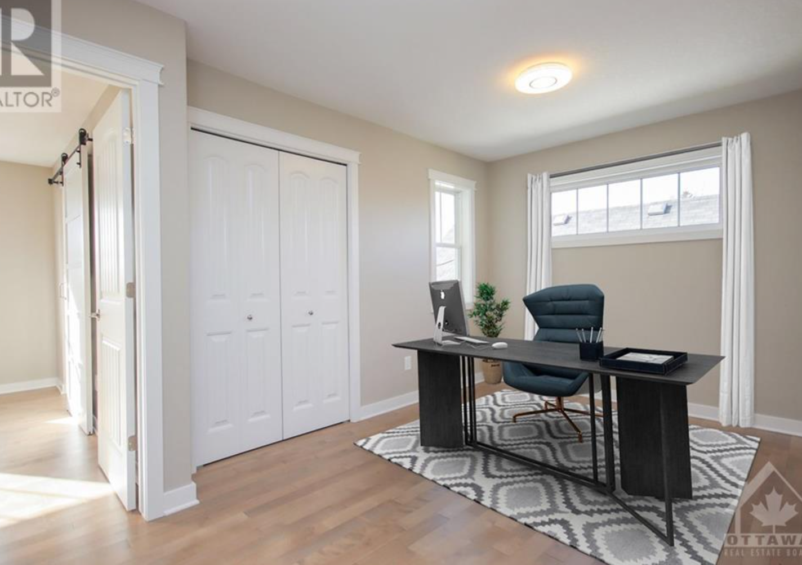
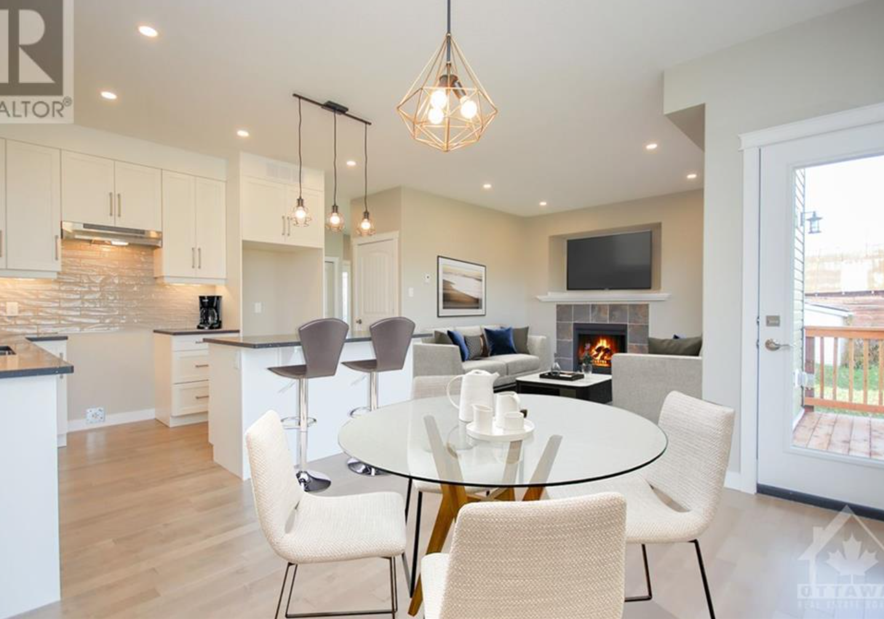
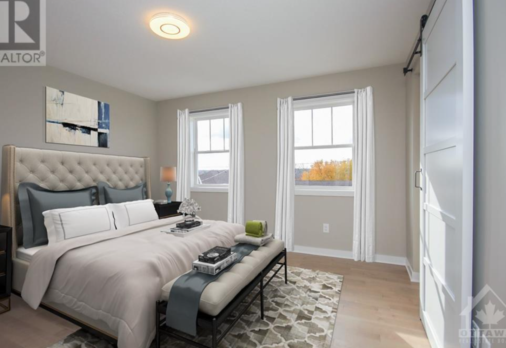
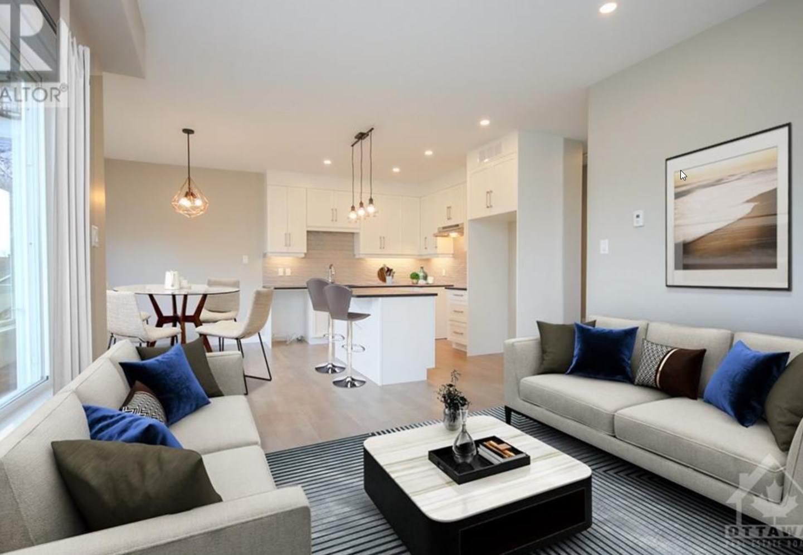

 
 
About The Home
$649,900 - 3 Beds - 3 Baths
Celebrate Christmas in your new home! Quality built, Tarion warranty, 2-storey semi-detached home at an affordable price. This turnkey home is available now - featuring a beautiful Deslaurier custom kitchen with quartz countertop & tiled backsplash; hardwood maple flooring on the main floor, feature wall with a gas fireplace in the living room. Mainfloor laundry/mud room. 9 ft. ceilings & large windows, sodded back-yard. Second level boasts 3 spacious bedrooms & den. Primary bedroom with a walk-in closet & ensuite bath. Kid-friendly bedrooms with 3-piece family bath. Second floor office/den. Basement features 8' ceilings, tankless hot water tank. Additional features include: 30-year architectural shingles, seamless eavestrough, back deck, 200 amp panel, asphalt laneway, poured concrete walkway. Offers kindly received on December 3, 2021 a 2:00 p.m. Virtually staged photos of 33 Harold, mirror image.
- Square Feet: 2005
- Style: Attached
- Building Type: Town House
- Heating: Forced Air
- Cooling: Central Air